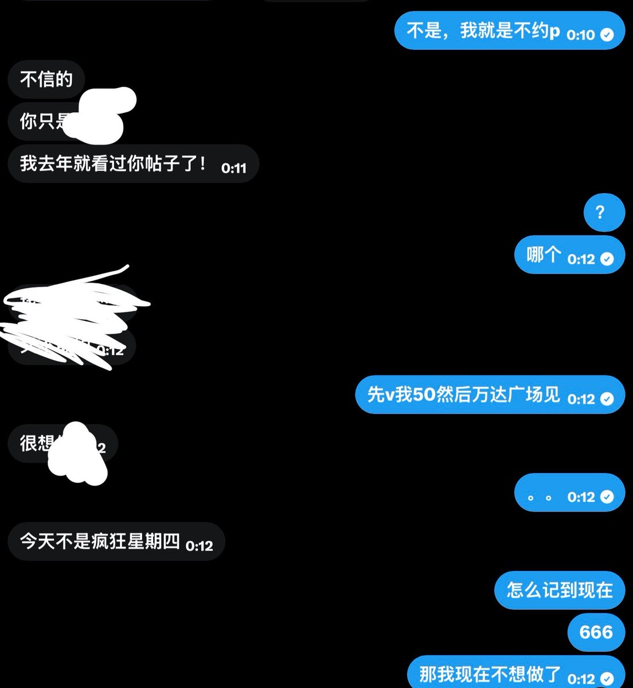

默与合
@MoYoHe_
@rabbot1Il 感觉不只是性压抑了，已经变成爱压抑或者寻求认同感了，性压抑自己动动小手就解决了，但是像这种不停去骚扰别人获得关注的就像小孩子啼哭取得关注一样，他给你发约吗或者发吊照你只要回复他，他获得关注就会满足，然后就更得寸进尺，推特这个平台私信的条件还是太宽松了

？
@rabbot1Il
讲一下我从性压抑到现在的原因：
原理类似在小baby啼哭时在他面前大哭，他就会懵逼地停下来看着你
当我xyy的时候发现这上面的99%人比我压抑一万倍，我就不敢压抑了，他们疯了一般地撕咬上来。 https://t.co/qRF9CF48cU